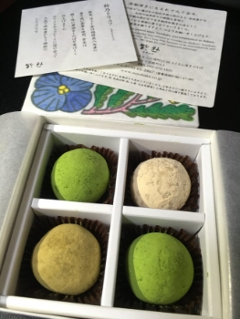
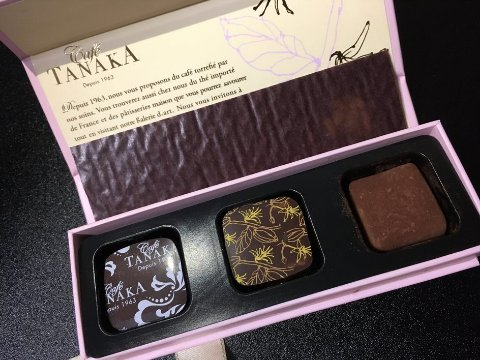
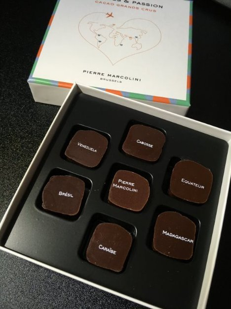
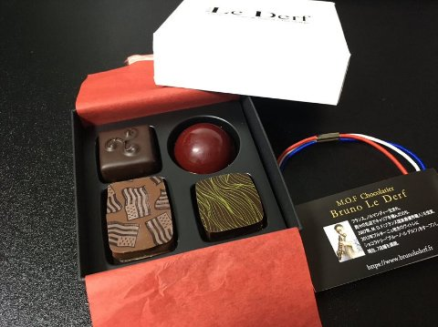
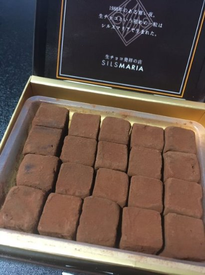

チョコレート
2022年2月11日
2:07
2022/02/9
Praline by Pascal Caffet - プラリネショコラセットS
やすくておいしい。プラリネ。プラリネってなんだ？
600円台。イオンのサイトにシェフ監修商品ってあったので本家のものではないのかも？
左から
クールルージュ：ラズベリーアーモンド
プラリネ ペカン：アーモンド＆ペカンナッツ
モルティエ・ドール レ：クレープクランチ入りヘーゼルナッツ
いちばん左のやつがラズベリー味で好きだった。右のやつはさくさく、真ん中のはもったり濃いかんじ。一般的なチョコレートの甘さ。

2022/02/10
鈴懸（すずかけ） - 鈴乃トリュフ
1,301円
お茶風味トリュフ。ホワイトチョコベース。
抹茶２つと玄米茶、ほうじ茶１つずつ。たぶん左下が玄米茶？
開けた瞬間のお茶（ほうじ茶？）の香りはすごいけど、味はそこまでお茶！ってしてない。
抹茶は結構抹茶感あるけど玄米茶（たぶん）はホワイトチョコの主張のほうがつよめ。コーヒーとかよりお茶に合う。
口に入れた瞬間はホワイトチョコらしいあまーーーーい！って感じの強い甘さを感じるんだけど溶けたあとはびっくりするほどさっぱりした後味してる。ホワイトチョコ苦手だけどこれは食べやすい！
トリュフがどんなだったかイマイチ覚えてないんだけど、これはトリュフにしてはちょっと固めかも？シルスマリアの生チョコよりちょい固くらい。とろける感じというよりやわらかい固形チョコという感じ。

2022/02/10
CAFE TANAKA -
たぶん1000円前半
左から
- カフェタナカ：自家焙煎コーヒー
- プラリネ・ベルガモット：ベルガモット（高知県産）
- ガナッシュ・ショコラ・サントメ（たぶん）：サントメ島カカオのスペシャリテ
おいしい。口当たりは軽めかも？一粒食べて満足するんだけどしばらく経つとまた食べたくなってくる。魔性のチョコ。
コーヒーのやつがすごい。口に入れた瞬間のコーヒーの苦みというかえぐみというかあの独特のコーヒーの空気（香り？）が口の中にむわ！って広がる。コーヒー飲んでんのか？ってレベル。でもチョコなんだわ。後味は少し苦くてなおコーヒーっぽい。そのおかげで？さっぱりしてて甘み中和茶が要らない。だいぶ好きな味かも。
ベルガモットは香り強め。いやコーヒーも結構コーヒーの主張強かったので同じくらいかもしれないけど。初見はちょっとびっくりするかも。

2022/02/10
PIERRE MARCOLINI - VOYAGES & PASSION
2,646円
チョコフレーバー（？）食べ比べみたいなラインナップの箱。一度こういうの食べて見たかったんだよね。
周りの固い部分がビターチョコ（たぶんぜんぶ同じ味）のようで、基本的には全部ビターに収束する。
PIEREMARCOLINIとCABOSSEは当たり障りのないビターチョコレートに感じた。つまり正直に言えば違いがわからなかった（）。強いて言うならPIEREMARCOLINIだけ別日に食べたので比較しようが無かった感じはある。でもまあ素人なんてこんなもんよ。
でもECUADORは風味が独特でｵｯ！？ってなったな。美味しい美味しくないを感じる間もなく無くなってしまったのでもう一回くらい食べたい。パンフには”フローラルな心地よいアロマ”って書いてあるけどなんか花の香でもつけてたのかな…？花の香付けされたチョコとかは進んで食べてこなかったので珍しく感じただけの可能性はある。
CARAIBEはパンフにバニラってある通り前述の３つよりかまろやかな風味だった。まあ外側のビターチョコのおかげでやっぱりビターに収束するんですけども。でもバニラっていうほどバニラバニラしてなかったな。あくまでチョコレートの風味を大事にしてるってことなんかな？
BRAZILはたしかに言われてみればコーヒーぽいかもという感じ。コーヒーは入ってないんだよね。コーヒーっぽいチョコなんやろな。でも外側もビターチョコなのでビタービターでちょっと逆にくどさあったかも。
その点VENEZUELAは良かったな。やわらかくまろやかなあじわいってかんじ。もっと食べたかった。
今後こういうの食べるときは1日一粒ずつ大事に食べよ！とか考えずまとめて食べきった方がちゃんと比較できて楽しいよ。と未来の私にアドバイスを残しておくわね。
ただ一度に食べると味が混ざっちゃうので1日の中で間を開けて食べると丁度いいかも。コーヒーとか紅茶でリセットするにもその飲み物の風味が残っちゃうからあんま意味ないし。

2022/02/16
Bruno Le Derf
1,728円
初めての箱推し。
どれを食べても口に合うし、フレーバーだけじゃなくてチョコレートの味とか甘さのバランスとかが私とベストマッチしたのがこの箱。
他の味を試してみない事にはまだ言い切れないけど、ここのお店とは味覚が合うかもしれない！！
他のお店のチョコは甘さが強すぎたり苦みが強すぎたり単純にフレーバーがそれほど好みではなかったり…基本的にはどれもおいしかったし食べられるならいくらでも食べるわよ、というくらいには好きなんだけど、じゃあ自分で金払ってリピートするか？と聞かれると悩んでしまう、そういう程度の”好き”だったんだけど、ここは違う。
次にまた見かけたら買っちゃうと思うし、他の味を試すためにもしばらくは積極的に通いたいなと思ってしまうくらい口に合った。また買います。
- 左下：そばのプラリネ
そばの実とアーモンドのプラリネ
そこそこ甘いけどくどく感じるようなものじゃなくて純粋においしい。アーモンドの甘香ばしい感じにそばのツンとした？香ばしさも合わさって後味が新鮮。後味は和の雰囲気。ざりざりした食感はちょっとなれないけど、味はすごく好き。そばとても良い。 - 右上：カシス＆ヘーゼルナッツ
ラズベリー？の酸味感がわずかにありつつでも酸っぱすぎない甘さと酸味のバランスが絶妙。歯ごたえもすこしざくざくしてて食べ応えありつつ私が苦手なレベルのザクザク度ではない。塩梅がすごい。ここのチョコとっても好きかも - 右下：テ ヴェール
抹茶ガナッシュをダークチョコレートでコーティング
はじめは抹茶ガナッシュがちょっと甘いか？って思ったけど、抹茶もダークチョコレートも後味に甘さを残さないので最後はすっきり終われる良い距離間のチョコレート。 - 左上：ブラックベリー
他にくらべてもちもちしたベリーの何か（パートドフリュイ？）が他のチョコレートと食感を異なるものにしていて楽しい。あとこれもテヴェール並みの甘さがあるけど、ダークチョコレートコーティングにより食べやすくなっている。

2022/02/20
SILSMILK - SILSMARIA
1,296円
久々の甘さ全振りチョコレート。ミルクの名は伊達じゃない（？）
このページ内でいうと鈴乃トリュフと同じくらいの甘さ。ホワイトチョコと張り合えるレベルなので結構甘いかも。糖分摂取が目的なら1粒で満足できる。
生チョコとしては普通の生チョコといった感じ。この甘さならビターチョコも試してみたいな。次はシルスビターにしよう。

たくさんチョコを食べようの会－感想①チョコレートの値段による違い（体感）
良いお値段のチョコレートをいくつか食べてみてわかったんですけど、いいお値段のチョコレートならいくらでも食べられる。
というか食べて一度満足してもまたすぐ次が欲しくなる。（特にビター寄りのやつ）
お高いチョコをそんな一気に食べるのももったいないしなとか思って市販のお安いやつを食べようとすると「でもこれじゃないんだよな…」って脳が拒否するので、チョコの味の違いはいまいちわからんのですけど本能的（？）に高いやつのほうが美味しく感じてるみたい。おそろしいな。甘さ控えめってのもあると思うんだけどそれだけじゃない気がする。そもそも私は市販のビターチョコがあまり好きじゃないし。
同じ味じゃないからなのかな？って思ったりもしたけど、お手頃チョコだってフレーバーで分けられてて飽きさせない商品もあるってのを考えると、なんか違うんだろうな‥‥
たくさんチョコを食べようの会－感想②チョコレートに対する認識
今までの自分のチョコレートへの印象は「甘さを摂取するためのもの」「甘さに"チョコレートという味"がついているもの」というものだったのだけど、後者にいたっては何言ってんだコイツって感じではあるんだけど、でもマジでそれくらい"チョコレート"の味の違いってのがわからなくて、どのメーカーのを食べても「”チョコレートという味”の甘い固形物、違いといえばフレーバーでつけるもの」でしかなかったみたい。だからチョコレートで大好きといえる商品がないって思ってたみたい。
文末に”みたい”がついているのは、それまでチョコレートに関してはこういうことを意識もしてなくて、この「たくさんチョコを食べようの会」で初めて知ったからです。
お高いやつはどうやらお店ごとに”チョコレート"の味が違うのだとちゃんとわかる。ちゃんとというには自信がないけど、比較的わかる。わかりやすい。
なんでかはわからんけど。甘さが控えめなせい？かもしくは、ミルクがあまり使われていないせい？
いや私が普段市販メーカー品でどういうチョコを食べてるかもよくわかってないんだけど、たぶんミルクチョコなんですよね。そこそこ甘くてとりあえず美味しく食べられる味のチョコ。代表格としてはアルファベットチョコみたいな味のアレ。もちろんアレもおいしいと思っているよ。でもそれとこれとは別。
だから今回、そういう”チョコレート”って感じのチョコレートを食べる事によって、自分の好きな”チョコレート"の味を知ることができたわけですね。
つまりは私が今まで「チョコレートはカカオ度数とフレーバーの違いを除けばどれも同じようなもんだしな～」と思っていたのはとんでもない誤認で、非常にもったいないことだったのでは？というお話でした。
余談なんですけどアルファベットチョコって名前これ正式名称だっけ？ってｇｇったらそれはまあ合ってたんですけど、このなじみ深い商品すらピスタチオ味が生産されていてこの巨大ピスタチオブームに恐れおののいています。だれが流行らせたんだ
追記：いやでもやっぱ四角いチョコレートにありがちな中身ガナッシュ外身ダークチョコレートの構成で使われているダークチョコレートの味の違いはよくわからんのでよくわからんかも～～～～～～まあリピートしたくなるくらい好みのチョコを見つけるのが目的なのでいいです。
OneNote で作成されました。